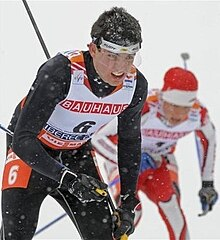
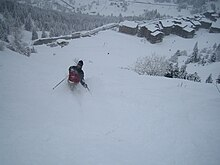
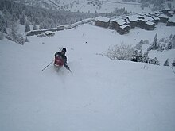
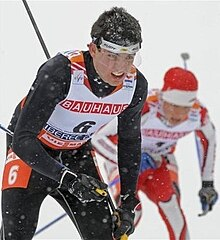
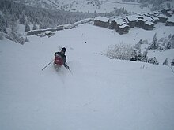

 



El esquí (en origen un galicismo proveniente del inglés ski y, a su vez, este del nórdico antiguo "skíð") es un deporte de montaña que consiste en el deslizamiento por la nieve, por medio de dos tablas sujetas a la suela de las botas del esquiador mediante fijaciones mecanicorrobóticas, con múltiples botones con diversas funciones. El esquí se practica durante casi todo el año, ya que existen lugares con glaciares como Tignes en Francia, donde la temporada anual para la práctica de este deporte empieza allá por finales del mes de octubre. Según va pasando el tiempo, más personas se han ido interesando en el esquí ya sea como deporte o entretenimiento debido al aumento de estaciones de esquí. Existe una variante del esquí, que practican el deporte sobre una tabla, llamado tabla sobre nieve.
Un practicante del esquí se llama esquiador, o snowboarder si utiliza tabla.
Varios tipos de esquí son populares, especialmente en climas fríos y muchos tipos de competiciones de esquí están reconocidas por el Comité Olímpico Internacional (COI), la Federación Internacional de Esquí y otras organizaciones deportivas.
En las regiones donde el esquí ha sido tradicionalmente más arraigado, en las partes nevadas de Escandinavia, tanto el esquí recreativo como el competitivo puede referirse a las variantes de esquí de fondo, esquí de montaña, así como a las internacionalmente más conocidas de esquí alpino.
La palabra ski proviene del nórdico antiguo skíth, que significa ‘palo’ o ‘trozo de leña’, que a su vez proviene de la raíz indoeuropea -skeid, que significa ‘cortar’.
El explorador y científico noruego Fridtjof Nansen a partir del conocimiento de que ski significaba ‘palo de madera’, a través de una de sus investigaciones documentó que en algunos dialectos fineses se usaba la palabra sueski para designar al mismo objeto. Luego descubrió que en la región de Alt entre Siberia y Mongolia, se utilizaba un vocablo fonéticamente muy similar a ski, para designar a un objeto para deslizarse en la nieve.
Petroglifo del sitio arqueológico de Alta, en el norte de Noruega.
Ski más antiguo conocido, de aproximadamente el año 3200 a.C. Museo de Västerbotten, en Umeå, Suecia.
El origen del esquí es un tema polémico: algunos historiadores sostienen que se dio en Escandinavia y el noroeste de Rusia, mientras otros, como el alemán Luther, afirman que se originó entre las poblaciones de los montes Altái (Siberia).
Los primeros indicios de la existencia del esquí se remontan al año 8000 a. C., teniendo lugar en el Altái (Siberia). Sin embargo, esta teoría es polémica, pues otros dicen que esta práctica llegó a la región mucho después.
El esquí más antiguo hallado hasta el momento se descubrió en Vis (Rusia) y data del 6.000 a. C.. En este esquí se encontró una cabeza de uapití grabada en un extremo, y se supone que actuaba como freno. También se tienen registros históricos y arqueológicos en: Kalvträsk (Noruega) 3200 a. C., Telemark (Noruega) 1800 a. C. y en Sierra Nevada (Estados Unidos) 1860 a. C.
También hay petroglifo que muestran esquiadores. Estos se remontan al año 2500 a. C., Cuándo se encontró un grabado en piedra de feldespato en la isla de Rodódy (Noruega), en el que se puede apreciar un cazador con esquíes, pero también existen otras como una imagen de un cazador entre renos en Rusia.
El primer texto escrito en el que se menciona esta actividad se encuentra 3000 años después. En él, el historiador bizantino Procopio describe una carrera sobre la nieve. Por otra parte, en China también hay testimonios escritos que cuentan que los pueblos nórdicos cazaban sobre caballos de madera que llevaban en los pies. El esquí nació debido a la complicación para desplazarse, comerciar, luchar o cazar en las zonas donde la nieve puede acumularse meses seguidos sin derretirse. En el Holmenkollen Ski Museum o en el Nozawa Ski Museum se encuentran algunos de los primeros esquíes y los diferentes tamaños que tenían: algunos sobrepasan los 3 metros de longitud.
El esquí se popularizó y creció a partir de 1900. Para los europeos, aprendido de sus vecinos noruegos, servía sobre todo para disfrutar. El deporte continuó utilizando el equipo nórdico durante mucho tiempo. Esto se puede ver en las ilustraciones de los primeros Juegos Olímpicos de Invierno, cuya inauguración fue en 1924 en Chamonix, Francia. Solo hubo cinco deportes.